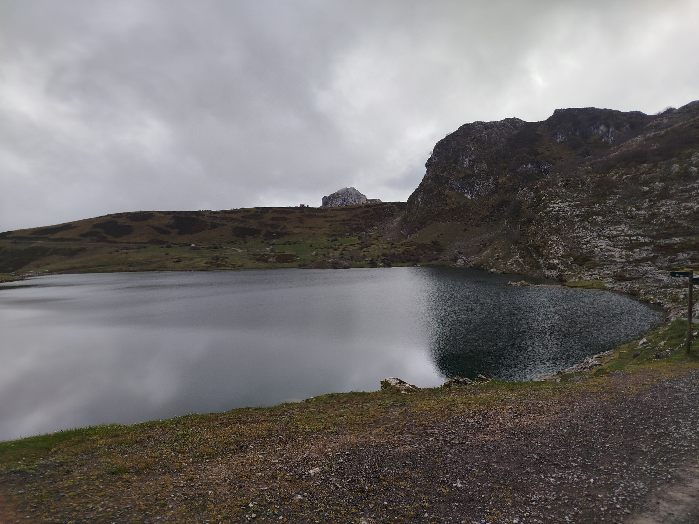
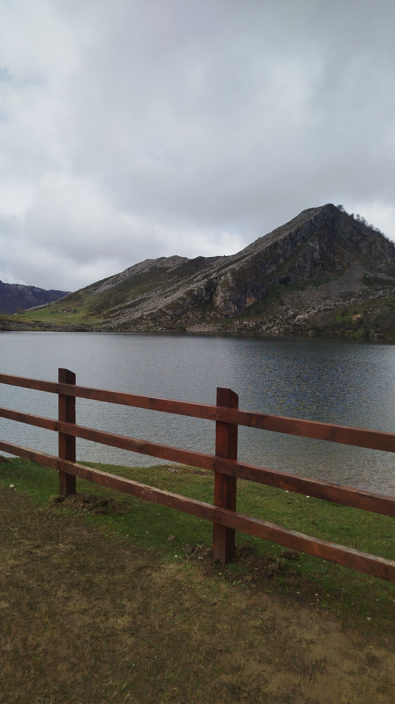
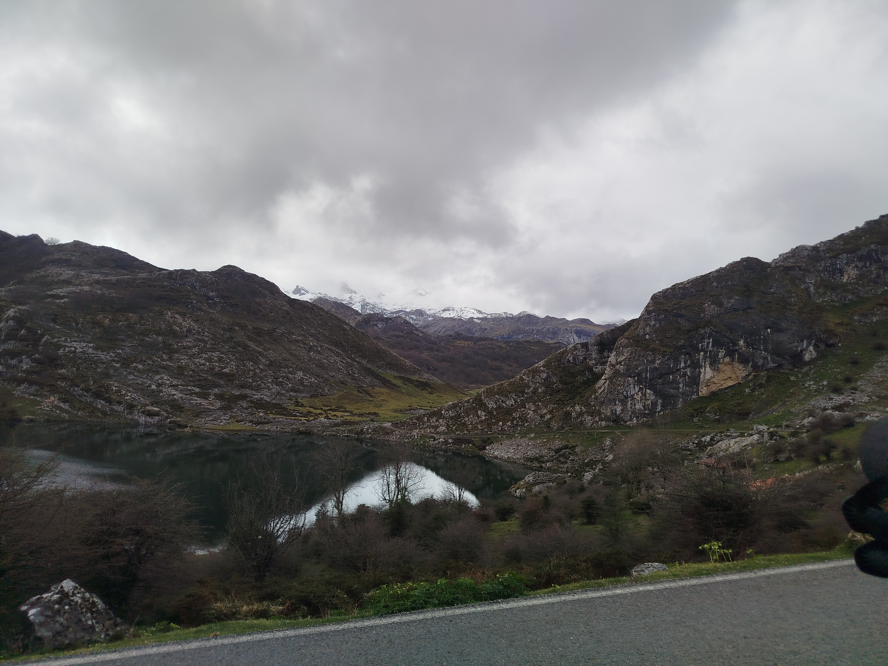
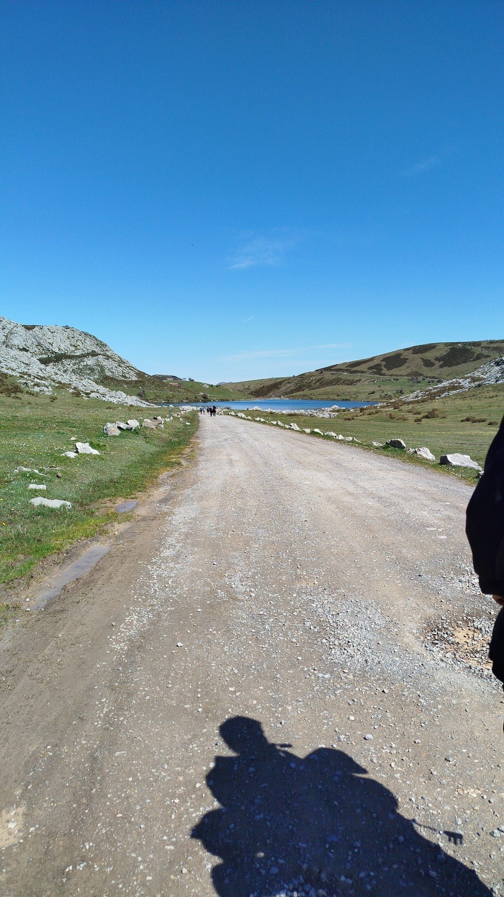

Lago Enol

El espejo de los Picos
El Lago Enol es, junto al Lago Ercina, uno de los denominados Lagos de Covadonga, los más famosos de Asturias y posiblemente de toda la cornisa cantábrica. Situado a 1.070 metros de altitud en el corazón del Macizo Occidental, este lago glaciar de origen kárstico impresiona por la intensidad de su color: un azul-verdoso cambiante según la luz del día, que en las mañanas tranquilas actúa como un espejo perfecto reflejando las cimas circundantes.
Origen glaciar y ecología singular
El Enol se formó hace miles de años por la acción de los glaciares cuaternarios sobre la roca caliza del macizo. Hoy, sus aguas albergan una fauna acuática adaptada a las frías temperaturas de alta montaña, y sus riberas son un ecosistema valioso con praderas húmedas, brezales y bosquetes de hayas y robles. La zona goza de protección máxima dentro del Parque Nacional de los Picos de Europa, declarado Reserva de la Biosfera por la UNESCO.
Puerta de entrada al macizo
El Lago Enol funciona como punto de inicio para algunas de las rutas más populares del parque. Desde aquí parten los senderos hacia el Lago Ercina, la Vega de Ario, Vegarredonda y las cumbres del Cornión. El acceso en vehículo privado está regulado en temporada alta, con un servicio de bus lanzadera desde Covadonga. Un lugar que conviene visitar con calma, a primera hora de la mañana, para descubrirlo en toda su quietud y esplendor.



